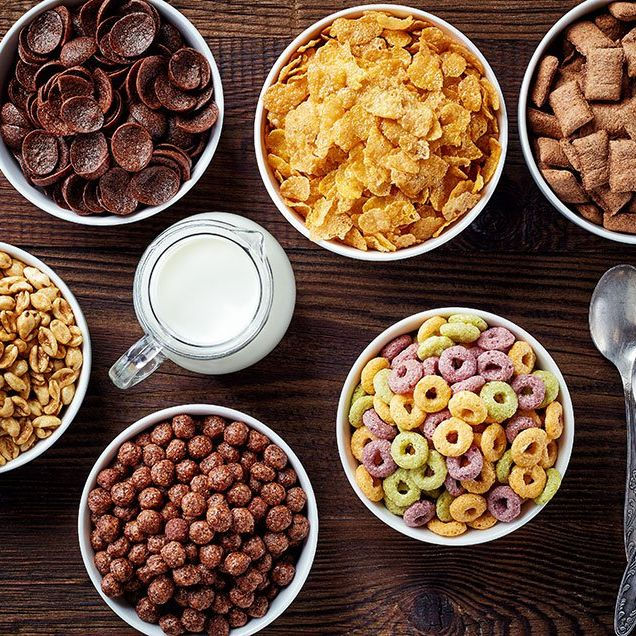

Cereal
Cereal

We're all kids at heart, and what's better than an ice cold bowl of delicious cereal!
The steps to making this sweet treat aren't too complicated, but with a little imagination and creativity, we can transform this into a classic masterpiece!
Ingredients
- A big ol' bowl
- Any type of cereal of your choice
- Ice cold milk(Dairy or Almond or Oat, whatever)
- A spoon
Steps
- Pour your dry cereal into your sturdy bowl
- Then pour ice cold milk over said dry cereal
- Next, make sure to aim for maximum milk to cereal ratio, but this varies person to person
- Finally, enjoy that delicious bowl of happiness